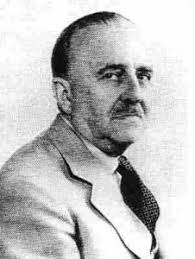

Breve historia
El sábado 8 de noviembre de 1919 al mediodía, en el Jockey Club Argentino -entonces en la tradicional calle Florida- y con el padrinazgo del Rotary Club de Montevideo, inició su trayectoria el rotarismo argentino, con la presidencia del doctor Jorge A. Mitre, director del diario «La Nación». El acta fundacional -redactada a mano alzada por su primer secretario señor Teodoro Bourse- impulsaría un intenso proceso de divulgación y puesta en práctica de los propósitos nobles que habían inspirado al abogado Paul Percy Harris y sus amigos, al fundar Rotary en Chicago, en 1905.
